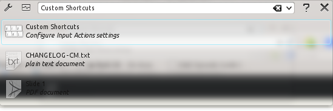
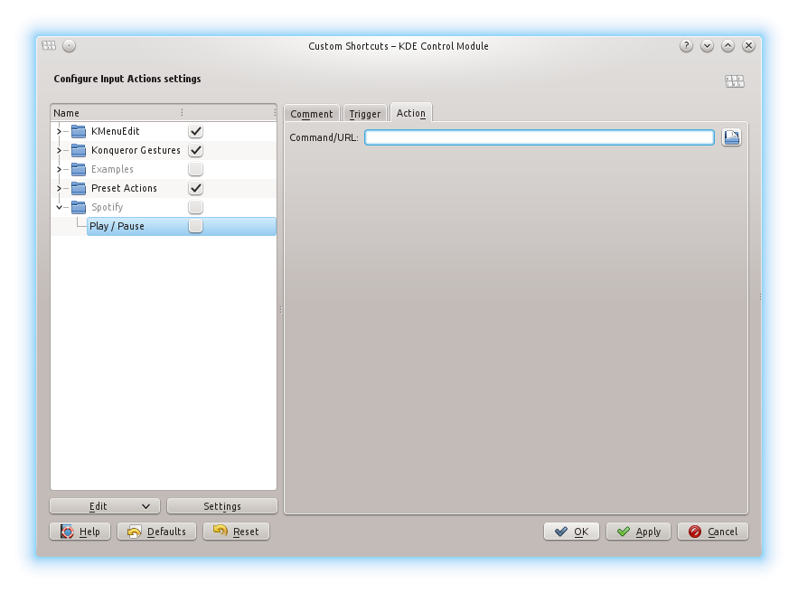
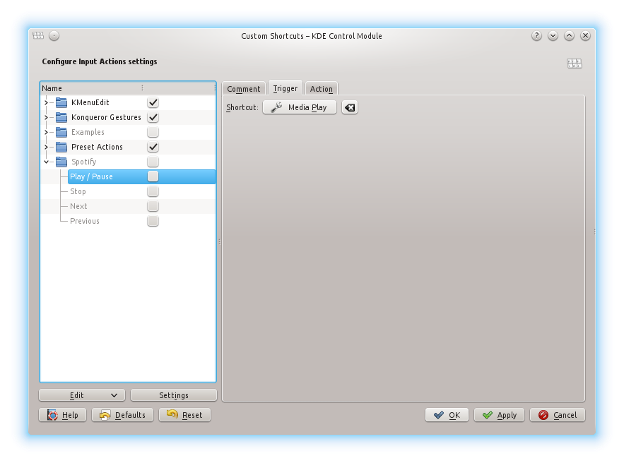
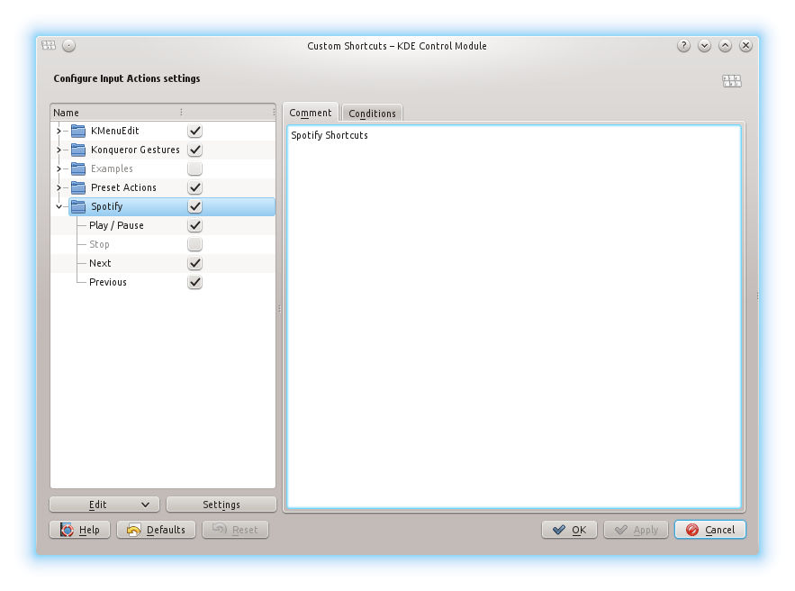

This is a post for random notes, since I never know where to put them, and always have trouble finding them later...
Also, I'm sick of running a personal wiki. So everything worth it's own blog post or cheatsheet will become one if I find the time. Everything else will end up here.
There is no structure here yet, so it's more of a "I found out how it works and dumped it here" kinda thing until I have the motivation to clean it up.
[Ctrl]+[F] is your friend!
- Ansible
- Fun with SSH
- Programming - Python
- Pentest Cheatsheet
- Linux GUI
- Really random stuff
- Links, Tools, Ressources
Linux GUI Back to Index
VNC Viewer - Arrow keys resize windows **Problem:** When i use the terminal inside my VNC session (full screen mode), the up arrow key doesn't browse the commands history as usual, but it resizes the terminal window..Source:
Gnome appears to be interpreting
Super-
xvnc4viewer clients.
Workaround:
As a workaround, you can go to the keyboard control panel and change the
keybindings to remove Super+Up and Super+Down from the Windows section.
Spotify Multimedia Keys in Kubuntu
Using the right-click feature sucks - aspecially when we have multimedia keys on our keyboard.
Run [Ctrl]+[F2] and type "Custom Shortcuts".

Then right click in the free space on the left side under the folder tree and click "New Group". Right click on the your new Spotify group and go to "New -> Global Shortcut -> Command / URL" and name that shortcut "Play / Pause".

In the Command/URL field under the Action tab, you enter the following command:
dbus-send --print-reply --dest=org.mpris.MediaPlayer2.spotify /org/mpris/MediaPlayer2 org.mpris.MediaPlayer2.Player.PlayPause
That's pretty much it. Now do the same for all your keys. The commands are
dbus-send --print-reply --dest=org.mpris.MediaPlayer2.spotify /org/mpris/MediaPlayer2 org.mpris.MediaPlayer2.Player.Previous
dbus-send --print-reply --dest=org.mpris.MediaPlayer2.spotify /org/mpris/MediaPlayer2 org.mpris.MediaPlayer2.Player.Next
dbus-send --print-reply --dest=org.mpris.MediaPlayer2.spotify /org/mpris/MediaPlayer2 org.mpris.MediaPlayer2.Player.Stop
Last but not least, you need to assign keys to your shortcuts. You can do this under the Trigger tab.

Don't forget to enable your new shortcuts and the spotify group.

Really random Back to Index
VMware ESX zlib.dll missingHi,
I thought it would be good to keep this info archived in the group for
further reference on ESXi, see below.
Kudos to Eric for figuring this out.
Regards,
Daniel
-------- Original Message --------
This seems to be a common issue with importing OVA files onto ESXi from
a Windows 7 computer VMware console with the following setup:
ESXi v5.0
Windows 7 Pro x64
OVA on local C: drive
vShpere Client installed from VMware-viclient-all-5.0.0-455964.exe
The error in question is simply the VMWare console trying to uncompress
the OVA file using a libray file that is simply not in the correct
directory. Moving this file to a location that is in the systems PATH
will resolve this issue.
Copy /C:\Program Files (x86)\Common Files\VMware\USB\*zlib1.dll*/* *
to
/C:\Windows /(Win 7 Pro).
This resolved the issue for me and the OVA file was easily imported into
ESXi
Ghost
Image size
Scale post images to 1400 width and < 256KB JPGs to upload them.
(GIMP Scale 1400, export jpg with 50 quality settings for sony xperia z images)
Links, Tools, Ressources Back to Index
Tools- Online
- Security Headers
- SSL Cert Check
- DownForEveryoneOrJustMe?
- Download
- Mitro - Login Manager
- Burp Web Proxy
- Service
- We Are The Artillery - Need help with bug/vuln disclosure?
Sort:
Convert Apache cert to IIS
openssl pkcs12 -export -out certificate.pfx -inkey mycert.key -in mycert.crt -certfile CA.crt